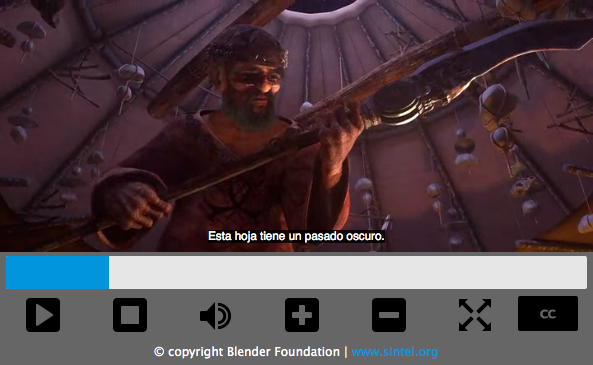

In other articles we looked at how to build a cross browser video player using the HTMLMediaElement and Window.fullScreen APIs, and also at how to style the player. This article will take the same player and show how to add captions and subtitles to it, using the WebVTT format and the <track> element.
Captioned video example
In this article, we will refer to the Video player with captions example. This example uses an excerpt from the Sintel open movie, created by the Blender Foundation.

Note: You can find the source on Github, and also view the example live.
HTML5 and Video Captions
Before diving into how to add captions to the video player, there are a number of things that we will first mention, which you should be aware of before we start.
Captions versus subtitles
Captions and subtitles are not the same thing: they have significantly different audiences, and convey different information, and it is recommended that you read up on the differences if you are not sure what they are. They are however implemented in the same way technically, so the material in this article will apply to both.
For this article we will refer to the text tracks displayed as subtitles, as their content is aimed at hearing people who have difficulty understanding the language of the film, rather than deaf or hard-of-hearing people.
The <track> element
HTML5 allows us to specify subtitles for a video using the <track> element. The various attributes of this element allow us to specify such things as the type of content that we're adding, the language it's in, and of course a reference to the text file that contains the actual subtitle information.
WebVTT
The files that contain the actual subtitle data are simple text files that follow a specified format, in this case the Web Video Text Tracks (WebVTT) format. The WebVTT specification is still being worked on, but major parts of it are stable so we can use it today.
Video providers (such as the Blender Foundation) provide captions and subtitles in a text format with their videos, but they're usually in the SubRip Text (SRT) format. These can be easily converted to WebVTT using an online converter such as srt2vtt.
Modifications to the HTML and CSS
This section summarises the modifications made to the previous article's code in order to facilitate the addition of subtitles to the video. If you are not interested in this, and just want to get straight into the JavaScript and more relevant CSS, skip to the Subtitle implementation section.
In this example we are using a different video, Sintel, as it actually has some speech in it and therefore is better for illustrating how subtitles work!
HTML Markup
As mentioned above, we need to make use of the new HTML5 <track> element to add our subtitle files to the HTML5 video. We actually have our subtitles in three different languages — English, German, and Spanish — so we will reference all three of the relevant VTT files by adding <track> elements inside our HTML5 <video> element:
<video id="video" controls preload="metadata"> <source src="video/sintel-short.mp4" type="video/mp4"> <source src="video/sintel-short.webm" type="video/webm"> <track label="English" kind="subtitles" srclang="en" src="captions/vtt/sintel-en.vtt" default> <track label="Deutsch" kind="subtitles" srclang="de" src="captions/vtt/sintel-de.vtt"> <track label="Español" kind="subtitles" srclang="es" src="captions/vtt/sintel-es.vtt"> </video>
As you can see, each <track> element has the following attributes set:
kindis given a value ofsubtitles, indicating the type of content the files containlabelis given a value indicating which language that subtitle set is for — for exampleEnglishorDeutsch— these labels will appear in the user interface to allow the user to easily select which subtitle language they want to see.srcis assigned a valid URL pointing to the relevant WebVTT subtitle file in each case.srclangindicates what language each subtitle files' contents are in.- The
defaultattribute is set on the English<track>element, indicating to the browser that this is the default subtitle file definition to use when subtitles have been turned on and the user has not made a specific selection.
In addition to adding the <track> elements, we have also added a new button to control the subtitles menu that we will build. As a consequence, the video controls now look as follows:
<div id="video-controls" class="controls" data-state="hidden">
<button id="playpause" type="button" data-state="play">Play/Pause</button>
<button id="stop" type="button" data-state="stop">Stop</button>
<div class="progress">
<progress id="progress" value="0" min="0">
<span id="progress-bar"></span>
</progress>
</div>
<button id="mute" type="button" data-state="mute">Mute/Unmute</button>
<button id="volinc" type="button" data-state="volup">Vol+</button>
<button id="voldec" type="button" data-state="voldown">Vol-</button>
<button id="fs" type="button" data-state="go-fullscreen">Fullscreen</button>
<button id="subtitles" type="button" data-state="subtitles">CC</button>
</div>
CSS Changes
The video controls have undergone some minor changes in order to make space for the extra button, but these are relatively straightforward.
No image is used for the captions button, so it is simply styled as:
.controls button[data-state="subtitles"] {
height:85%;
text-indent:0;
font-size:16px;
font-size:1rem;
font-weight:bold;
color:#666;
background:#000;
border-radius:2px;
}
There are also other CSS changes that are specific to some extra JavaScript implementation, but these will be mentioned at the appropriate place below.
Subtitle implementation
A lot of what we do to access the video subtitles revolves around JavaScript. Similar to the video controls, if a browser supports HTML5 video subtitles, there will be a button provided within the native control set to access them. However, since we have defined our own video controls, this button is hidden, and we need to define our own.
Browsers do vary as to what they support, so we will be attempting to bring a more unified UI to each browser where possible. There's more on browser compatibility issues later on.
Initial setup
As with all the other buttons, one of the first things we need to do is store a handle to the subtitles' button:
var subtitles = document.getElementById('subtitles');
We also initially turn off all subtitles, in case the browser turns any of them on by default:
for (var i = 0; i < video.textTracks.length; i++) {
video.textTracks[i].mode = 'hidden';
}
The video.textTracks property contains an array of all the text tracks attached to the video. We loop through each one and set its mode to hidden.
Note: The WebVTT API gives us access to all the text tracks that are defined for an HTML5 video using the <track> element.
Building a caption menu
Our aim is to use the subtitles button we added earlier to display a menu that allows users to choose which language they want the subtitles displayed in, or to turn them off entirely.
We have added the button, but before we make it do anything, we need to build the menu that goes with it. This menu is built dynamically, so that languages can be added or removed later by simply editing the <track> elements within the video's markup.
All we need to do is to go through the video's textTracks, reading their properties and building the menu up from there:
var subtitlesMenu;
if (video.textTracks) {
var df = document.createDocumentFragment();
var subtitlesMenu = df.appendChild(document.createElement('ul'));
subtitlesMenu.className = 'subtitles-menu';
subtitlesMenu.appendChild(createMenuItem('subtitles-off', '', 'Off'));
for (var i = 0; i < video.textTracks.length; i++) {
subtitlesMenu.appendChild(createMenuItem('subtitles-' + video.textTracks[i].language, video.textTracks[i].language, video.textTracks[i].label));
}
videoContainer.appendChild(subtitlesMenu);
}
This code creates a documentFragment, which is used to hold an unordered list containing our subtitles menu. First of all an option is added to allow the user to switch all subtitles off, and then buttons are added for each text track, reading the language and label from each one.
The creation of each list item and button is done by the createMenuItem() function, which is defined as follows:
var subtitleMenuButtons = [];
var createMenuItem = function(id, lang, label) {
var listItem = document.createElement('li');
var button = listItem.appendChild(document.createElement('button'));
button.setAttribute('id', id);
button.className = 'subtitles-button';
if (lang.length > 0) button.setAttribute('lang', lang);
button.value = label;
button.setAttribute('data-state', 'inactive');
button.appendChild(document.createTextNode(label));
button.addEventListener('click', function(e) {
// Set all buttons to inactive
subtitleMenuButtons.map(function(v, i, a) {
subtitleMenuButtons[i].setAttribute('data-state', 'inactive');
});
// Find the language to activate
var lang = this.getAttribute('lang');
for (var i = 0; i < video.textTracks.length; i++) {
// For the 'subtitles-off' button, the first condition will never match so all will subtitles be turned off
if (video.textTracks[i].language == lang) {
video.textTracks[i].mode = 'showing';
this.setAttribute('data-state', 'active');
}
else {
video.textTracks[i].mode = 'hidden';
}
}
subtitlesMenu.style.display = 'none';
});
subtitleMenuButtons.push(button);
return listItem;
}
This function builds the required <li> and <button> elements, and returns them so they can be added to the subtitles menu list. It also sets up the required event listeners on the button to toggle the relevant subtitle set on or off. This is done by simply setting the required subtlte's mode attribute to showing, and setting the others to hidden.
Once the menu is built, it is then inserted into the DOM at the bottom of the videoContainer.
Initially the menu is hidden by default, so an event listener needs to be added to our subtitles button to toggle it:
subtitles.addEventListener('click', function(e) {
if (subtitlesMenu) {
subtitlesMenu.style.display = (subtitlesMenu.style.display == 'block' ? 'none' : 'block');
}
});
Subtitle menu CSS
We also added some rudimentary styling for the newly created subtitles menu:
.subtitles-menu {
display:none;
position:absolute;
bottom:14.8%;
right:20px;
background:#666;
list-style-type:none;
margin:0;
padding:0;
width:100px;
padding:10px;
}
.subtitles-menu li {
padding:0;
text-align:center;
}
.subtitles-menu li button {
border:none;
background:#000;
color:#fff;
cursor:pointer;
width:90%;
padding:2px 5px;
border-radius:2px;
}
Styling the displayed subtitles
One of the less well known about and supported features of WebVTT is the ability to style the individual subtitles (something called text cues) via CSS Extensions.
The ::cue pseudo-element is the key to targetting individual text track cues for styling, as it matches any defined cue. There are only a handful of CSS properties that can be applied to a text cue:
coloropacityvisibilitytext-decorationtext-shadowbackgroundshorthand propertiesoutlineshorthand propertiesfontshorthand properties, includingline-heightwhite-space
For example, to change the text colour of the text track cues you can write:
::cue {
color:#ccc;
}
If the WebVTT file uses voice spans, which allow cues to be defined as having a particular "voice":
0 00:00:00.000 --> 00:00:12.000 <v Test>[Test]</v>
Then this specific 'voice' will be stylable like so:
::cue(v[voice='Test']) {
color:#fff;
background:#0095dd;
}
Note: Some of the styling of cues with ::cue currently works on Chrome, Opera, and Safari, but not yet on Firefox.
Browser Compatibility
Browser support for WebVTT and the <track> element is fairly good, although some browsers differ slightly in their implementation.
Internet Explorer
Internet Explorer 10+ subtitles are enabled by default, and the default controls contain a button and a menu that offers the same functionality as the menu we just built. The default attribute is also supported.
Note: IE will completely ignore WebVTT files unless you define the MIME type. This can easily be done by adding an .htaccess file to an appropriate directory that contains AddType text/vtt .vtt.
Safari
Safari 6.1+ has similar support to Internet Explorer 10+, displaying a menu with the different available options, with the addition of an "Auto" option, which allows the browser to choose.
Chrome and Opera
These browsers have similar implementations again: subtitles are enabled by default and the default control set contains a 'cc' button that turns subtitles on and off. Chrome and Opera ignore the default attribute on the <track> element and will instead try to match the browser's language to the subtitle's language.
Firefox
Firefox's implementation was completely broken due to a bug, leading to Mozilla turning off WebVTT support by default (you can turn it on via the media.webvtt.enabled flag.) However, this bug looks to have been fixed and WebVTT support re-enabled as of Gecko 31, so this will not be a problem for Firefox final release users for much longer (on Gecko 29 as of the time of this writing) this has been fixed as of Firefox 31, and everything works as it should.
Plugins
If, after reading through this article you decide that you can't be bothered to do all of this and want someone else to do it for you, there are plenty of plugins out there that offer caption and subtitle support that you can use.
- plyr.io
- This modern video player implements subtitles in both SRT and WebVTT file formats.
- playr
- This small plugin implements subtitles, captions, and chapters as well as both WebVTT and SRT file formats.
- Flowplayer
- HTML5 player supporting WebVTT.
- jwplayer
- This video player is very extensive and does a lot more than simply support video captions. It supports the WebVTT, SRT and DFXP formats.
- MediaElement.js
- Another complete video player that also support video captions, albeit only in SRT format.
- LeanBack Player
- Yet another video player that supports WebVTT captions as well as providing other standard player functionality.
- SublimeVideo
- This player also supports captions through WebVTT and SRT files.
- Video.js
- Supports WebVTT video subtitles.
- Radiant Media Player
- Supports multi-languages WebVTT closed captions
Note: You can find an excellent list of HTML5 Video Players and their current "state" at HTML5 Video Player Comparison.